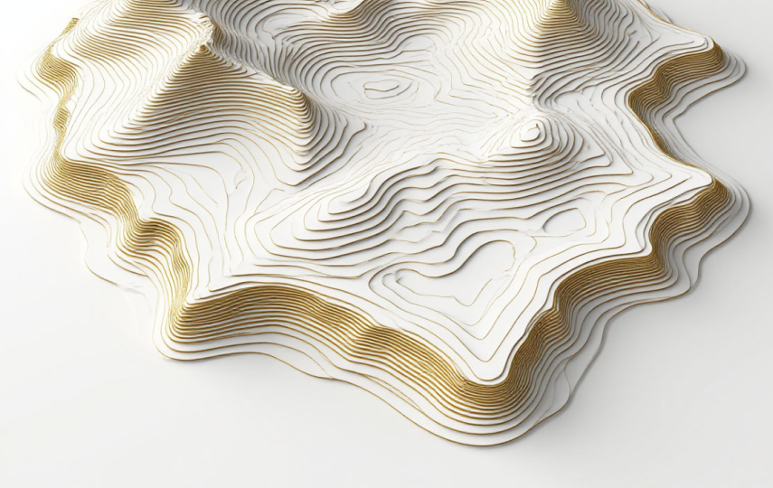
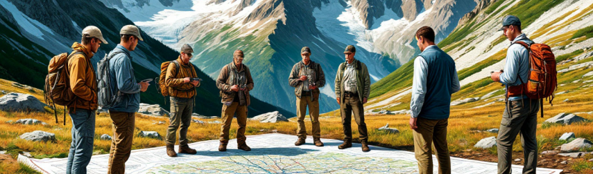
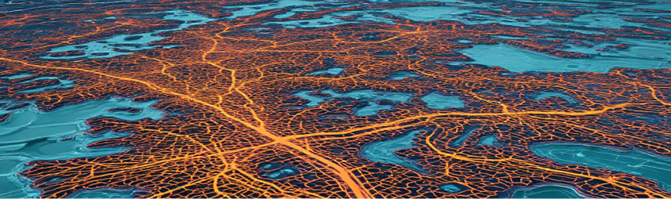
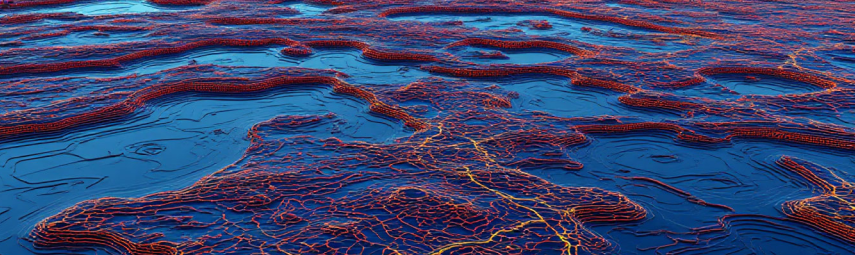
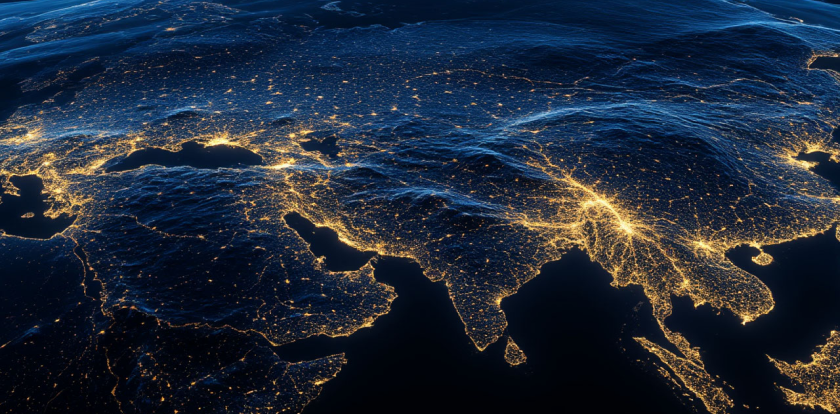
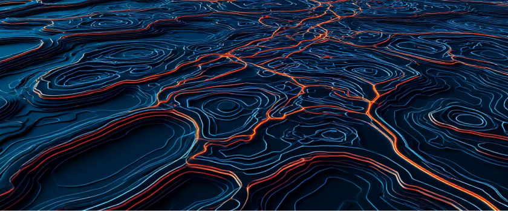
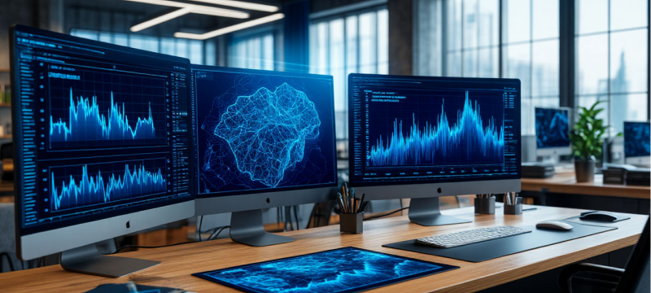
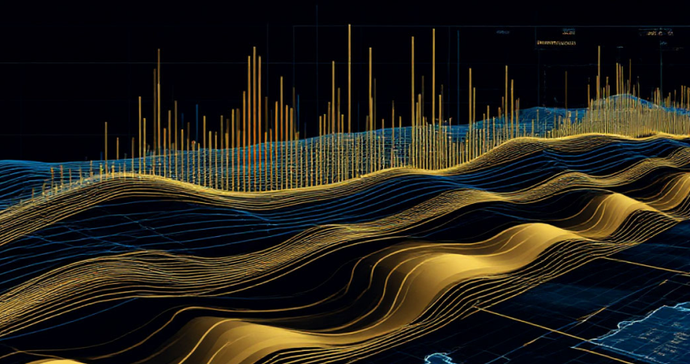

Компания «Геоджет-Групп» занимает лидирующие позиции на рынке геологоразведочных услуг, предлагая комплексный подход к решению задач по развитию минерально-сырьевой базы. Наша деятельность охватывает полный цикл геологоразведочных работ — от прогнозирования и поисков месторождений до подсчета запасов и технико-экономического обоснования проектов.
Мы объединяем международный опыт, передовые технологии и глубокие экспертные знания для обеспечения максимальной эффективности проектов наших клиентов.
Основу нашей методологии составляет интеграция традиционных методов геологоразведки с инновационными технологиями дистанционного зондирования Земли и современной обработки данных. Такой подход позволяет значительно сократить сроки и бюджет геологоразведочных проектов при одновременном повышении их результативности. Мы специализируемся на работе с твердыми полезными ископаемыми, включая золото, медь, полиметаллы и другие стратегически важные ресурсы.

Основу нашей методологии составляет интеграция традиционных методов геологоразведки с инновационными технологиями дистанционного зондирования Земли и современной обработки данных. Такой подход позволяет значительно сократить сроки и бюджет геологоразведочных проектов при одновременном повышении их результативности. Мы специализируемся на работе с твердыми полезными ископаемыми, включая золото, медь, полиметаллы и другие стратегически важные ресурсы.
В основе нашей философии лежит принцип научной обоснованности принимаемых решений. Каждый проект начинается с тщательного анализа имеющихся данных, оценки геологической модели и выбора наиболее релевантных методов исследований. Мы не предлагаем шаблонных решений — только индивидуальный подход, учитывающий специфику каждого месторождения и задачи конкретного заказчика.

Технологическая оснащенность является ключевым конкурентным преимуществом нашей компании. Мы используем современное геофизическое оборудование, лицензионное программное обеспечение для обработки данных и интерпретации результатов, а также собственные методические разработки. Это позволяет нам получать данные высокой достоверности и минимизировать риски наших клиентов на всех стадиях геологоразведочного процесса.
Оставьте заявку и получите бесплатную консультацию экспертов с опытом 100+ успешных проектов.
Расскажем, как сэкономить бюджет на разведке и сократить риски с помощью наших технологий.
Геофизические исследования составляют основу нашего технологического предложения. Мы выполняем полный комплекс электроразведочных работ, включая методы сопротивлений (ВЭЗ, электротомография), методы поляризации (ВП, ВП-СГ, ВП-ВЭЗ, ВП-ДП), методы заряда (МЗ, МЗТ), а также бесконтактное измерение электрического поля (БИЭП) и зондирование методом становления поля в ближней зоне (ЗСБ). Современная аппаратура и отработанные методики полевых работ обеспечивают высокую производительность и точность получаемых данных.
Дистанционное зондирование Земли и анализ спутниковых данных открывают новые возможности для оптимизации поисковых работ. Современные геологоразведочные проекты требуют быстрых и обоснованных решений, основанных на объективных и комплексных данных. Один из самых эффективных подходов сегодня — это анализ геологической информации, полученной при дешифрировании спутниковых снимков. Такой метод позволяет исследовать любую территорию в сжатые сроки и на раннем этапе получить представление о её рудоносном потенциале.
Передовые методы обработки, включая анализ главных компонент (PCA), кластерный анализ, расчет индексов минеральных и породных комплексов, позволяют выявлять перспективные участки без проведения масштабных полевых работ.
Геологическое моделирование и интерпретация данных являются завершающим этапом наших исследований. Мы создаем трехмерные геологические модели, выполняем морфоструктурный анализ, геоморфологическое и неотектоническое моделирование. Наши специалисты имеют значительный опыт в области машинного обучения для классификации геологических данных, что значительно повышает точность прогнозных построений.
Наши методические подходы прошли апробацию на месторождениях разного типа и стадий разведки, различного масштаба и геологической сложности. Мы имеем успешный опыт работы на золоторудных, медно-порфировых, полиметаллических и нерудных месторождениях. География наших проектов охватывает территории Казахстана, России, Центральной Азии и стран Африки.


Одним из ключевых преимуществ нашей компании является способность адаптировать методики работ под конкретные геологические условия и решаемые задачи. Мы разрабатываем индивидуальные программы исследований, оптимальные с точки зрения соотношения затрат и результативности. Наши технологические решения позволяют сократить площади поисковых работ в 5-10 раз без потери их эффективности.

Постоянное развитие методической базы является приоритетом нашей компании. Мы поддерживаем тесные связи с ведущими научно-исследовательскими институтами, участвуем в международных конференциях и профессиональных мероприятиях, публикуем результаты наших исследований в рецензируемых изданиях.

Это позволяет нам оставаться в авангарде технологических инноваций в области геологоразведки.
Наши специалисты регулярно проходят повышение квалификации и обучение новым методам исследований. Внутренняя система контроля качества обеспечивает высокий стандарт выполняемых работ на всех этапах — от планирования и полевых исследований до обработки данных и подготовки отчетной документации.

Международные стандарты отчетности являются обязательным требованием ко всем нашим проектам. Мы готовим отчеты в соответствии с требованиями JORC, NI 43-101 и CRIRSCO, что обеспечивает признание наших результатов международным инвестиционным сообществом и открывает возможности для привлечения финансирования.

Компания «Геоджет-Групп» предлагает уникальное сочетание международного опыта, технологических компетенций и глубокого понимания геологии месторождений. Наши решения позволяют значительно снизить риски и затраты на геологоразведочные работы при одновременном повышении их эффективности. Мы готовы стать надежным партнером в реализации ваших проектов — от ранних стадий поисков до подготовки месторождений к освоению.
Для получения дополнительной информации о наших услугах и обсуждения возможностей сотрудничества просим обращаться к нашим специалистам через контактную информацию, указанную на сайте. Мы готовы организовать презентацию наших методик и обсудить конкретные задачи ваших проектов.